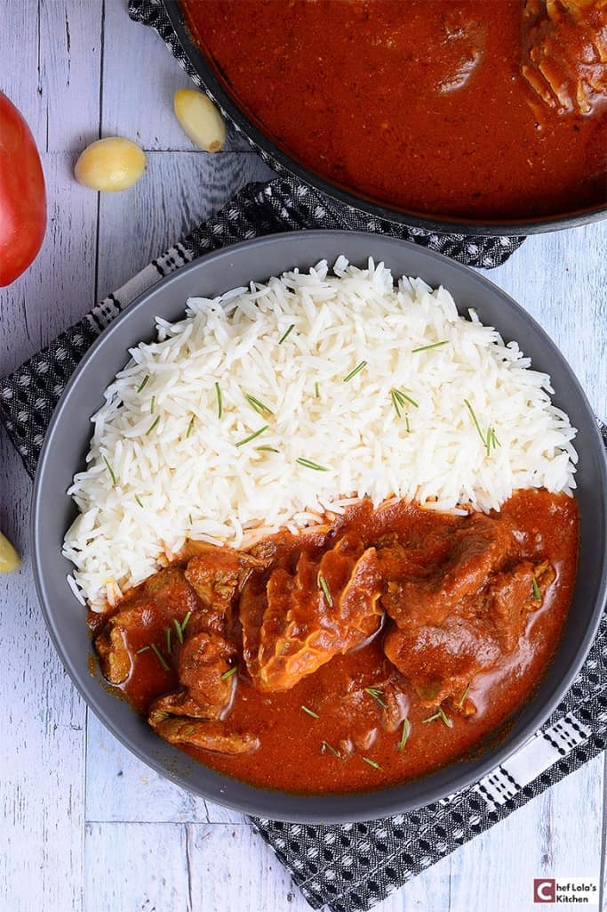

Beef Stew

Description
This Nigerian red stew recipe features my favorite Nigerian tomato stew using farm raised ram meat which adds a distinct, delicious gamey flavor!
Ingredients
for 6 serving
- 5 plum tomatoes
- 2 red bell peppers
- 1 red onion
- 2 habanero peppers
- 6 cloves garlic
- 1 tablespoon salt
- 1 teaspoon black pepper
- 1 cup water
- 1 cup vegetable oil
- 1lb flank steak
- 1 teaspoon paprika
- 1 teaspoon curry powder
- 2 cubes beef bouillon
- 1 bay leaf
- white rice
Steps
- In a food processor or blender, combine 4 chopped plum tomatoes, red bell peppers, chopped red onion, habanero peppers, garlic cloves, tomato paste, 1 tablespoon salt, 1 teaspoon pepper, and water. Puree until smooth.
- Heat vegetable oil in a large pot over medium-high heat.
- Add the remaining tomato, sliced onion, remaining salt, and remaining pepper. Sauté until fragrant.
- Add steak, rosemary, paprika, curry powder, and bullion cubes. Cook until the steak is golden brown and cooked through, about 10 minutes.
- Add the blended tomato and pepper mixture and the bay leaf.
- Bring to a boil over high heat. Cover and simmer at low heat for 20 minutes, until the stew has thickened.
- Fish out the bay leaf.
- Remove stew from heat and let sit 10 minutes.
- Serve with white rice and fried plantains. Garnish with scallions and parsley, if desired.
- Enjoy!
home